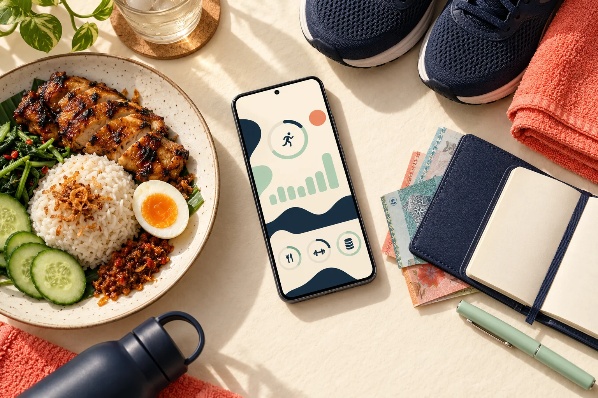

MAKAN. GERAK. WANG.
Hari kau,
dalam satu tempat.
Dari nasi tengah hari ke set terakhir workout. Dari protein harian ke baki yang betul-betul boleh belanja. LeanLog bantu kau nampak semuanya.
Android · BM & English · RM7/bulan atau RM49/tahun selepas trial

your way.
02 / KENALI LEANLOG
Lima ruang.
Satu rutin kau.
Tekan setiap tab untuk jelajah. Visual ini ialah ilustrasi fungsi dengan data contoh, bukan screenshot app.
COACH / CARDIO COMPANION
Kasut on.
Tekan start.
Jalan je.
Brisk walk, jog atau gabung kedua-duanya — Cardio Companion ikut pace kau secara automatik, tanpa perlu pilih mode. Start sesi terus atau quick log selepas selesai, tanpa perlu minta AI setiap kali.
- Target bebas, masa atau jarak
- GPS di luar; masukkan jarak untuk sesi timer / treadmill
- Auto pace: anggaran kalori aktif ikut pergerakan GPS dan berat semasa
- Pause, resume, interval & preset sesi
- Pace, kelajuan, jarak dan pecahan kilometer
- Voice cues, vibration & pilihan screen kekal hidup
- Save terus ke activity log yang sama
Kalori aktif dianggarkan daripada pace, masa bergerak dan berat semasa pada awal sesi; tenaga rehat tidak dicampurkan. Jurang signal GPS tidak diisi dengan andaian jog. Quick log / timer memerlukan jarak dan menggunakan pace purata. Anggaran ini bukan bacaan sensor kalori. GPS latar belakang memerlukan kebenaran lokasi pada APK.
04 / BUKA SATU-SATU
Banyak yang muat
dalam app ni.
Dah tahu bahagian yang kau cari? Buka senarai di bawah untuk tengok apa yang boleh dibuat.
05 / MAKE IT YOURS
App kau.
Personality kau.
14 themes termasuk Cutie, Grand Line / One Piece dan Saiyan / Dragon Ball, dengan warna dan typography tersendiri. Motif juga ikut bersama pada halaman, drawer dan widget.
Tekan theme untuk cuba preview warna dan motif. Ini preview web; susun atur sebenar dalam app berbeza.
YOUR DAY, YOUR WAY.
Good afternoon,
you.
06 / HARGA, TERUS TERANG
Cuba dulu.
Jadikan rutin
lepas tu.
Trial 3 hari. Bila trial tamat, akses app dikunci dan kau perlu aktifkan pelan untuk terus guna.
Pelan bulanan dan tahunan memberi akses kepada fungsi app yang sama.
UNTUK RUTIN SEPANJANG TAHUN
Bersamaan kira-kira RM4.08/bulan. RM49 dibayar setahun.
- Makanan, macro & protein tracking
- Progress badan, Coach & Cardio Companion
- RedCoins, reports & receipt attachments
- Semua themes & Android widgets
Bayar melalui QR / transfer yang disediakan dalam app, kemudian hantar bukti melalui WhatsApp. Pengaktifan dinyatakan dalam app sebagai dalam masa 24 jam.
07 / JOM MULA
Hari pertama,
tak perlu perfect.
Download APK 3.0.11 ↓Android 8 ke atas · ARM64 · Muat turun melalui GitHub Releases
- 01
Install & isi profile
Tetapkan berat, tinggi, umur, aktiviti dan goal. Target boleh disesuaikan ikut keperluan kau.
- 02
Cuba rutin sendiri selama 3 hari
Log satu meal, mulakan cardio atau setup akaun dalam RedCoins. Tak perlu import Bluecoins untuk mula.
- 03
Pilih pelan bila nak teruskan
RM7 sebulan atau RM49 setahun. Ikut arahan bayaran dalam app dan hantar bukti untuk pengaktifan.
08 / YANG SELALU ORANG TANYA
Sebelum kau
tekan download.
App ni free ke berbayar?
Berbayar, dengan trial 3 hari. Selepas trial tamat, app memaparkan paywall dan akses dikunci sehingga pelan diaktifkan. Harga dalam app: RM7/bulan atau RM49/tahun.
Wajib ada smartwatch atau Bluecoins?
Tak. RedCoins boleh dimulakan dengan akaun dan transaksi sendiri. Untuk steps, LeanLog membaca Health Connect: Mi Fitness diutamakan apabila ada data positif hari ini, dan data Health Connect hari ini digunakan sebagai fallback. Steps tetap memerlukan sumber data dalam Health Connect; app tak menghasilkan steps sendiri jika tiada sumber.
Log makanan guna AI macam mana?
Ambil gambar atau pilih sehingga 3 gambar untuk satu meal. AI Gemini menganggarkan item makanan, portion, kalori dan macro. Kau review dan betulkan sebelum save. Selepas save, Edit makanan membuka semula review untuk ubah portion setiap item, tarikh dan masa. Anggaran gambar boleh tersilap, jadi portion dan nombor boleh diedit.
Boleh guna screenshot aktiviti dari Mi Fitness?
Boleh. AI membaca metrik yang memang kelihatan dalam screenshot, seperti duration, jarak, pace, heart rate atau splits. Review dahulu sebelum save. Masa AM/PM atau PG/PTG dinormalkan ke format 24 jam, termasuk untuk backdate. App sahkan simpanan tempatan sebelum review ditutup. Medan yang tiada tak direka, dan log lama tak diisi semula secara automatik.
Resit terus masuk Google Drive?
Resit boleh dilampirkan pada transaksi dan disalin ke folder yang dipilih melalui Android system picker. Ini bukan sambungan Google Drive melalui OAuth. Drive hanya tersedia jika provider itu menyokong pilihan folder; kalau tidak, pilih folder tempatan dan sync sendiri. Backup JSON menyimpan metadata, jadi fail resit dan gambar perlu dijaga berasingan.
Kena online sepanjang masa?
Fungsi AI dan sambungan cloud memerlukan internet. Rekod kewangan RedCoins menggunakan database tempatan. Kebenaran Android diperlukan untuk fungsi tertentu, seperti lokasi GPS, Health Connect, calendar dan notification inbox.
Ada iPhone atau Play Store?
Download yang disediakan pada page ini ialah APK Android ARM64 untuk Android 8 ke atas. Ia dipasang melalui fail APK dari GitHub Releases.
Data dan backup macam mana?
Cloud backup/restore menyimpan rekod dan tetapan LeanLog sahaja. Upload menunjukkan kemajuan dan memaparkan ralat jika belum disahkan dalam 60 saat; cubaan yang tamat masa bukan bukti backup berjaya. Ledger, akaun, bajet dan tetapan RedCoins dikecualikan, termasuk ketika restore cloud lama. Untuk kewangan, gunakan backup/restore JSON RedCoins ke folder pilihan. Jangan anggap fail gambar dan resit tempatan semuanya termasuk dalam backup cloud atau JSON; simpan salinan media sendiri juga. Notification import memerlukan izin dan calon transaksi disemak sebelum dimasukkan ke ledger.